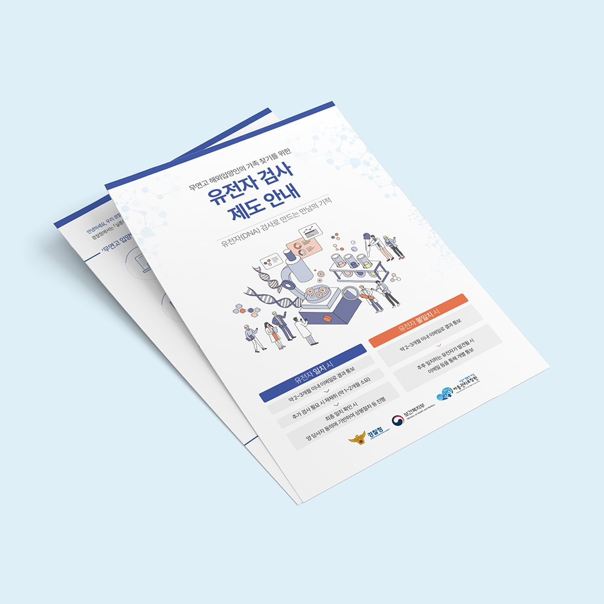
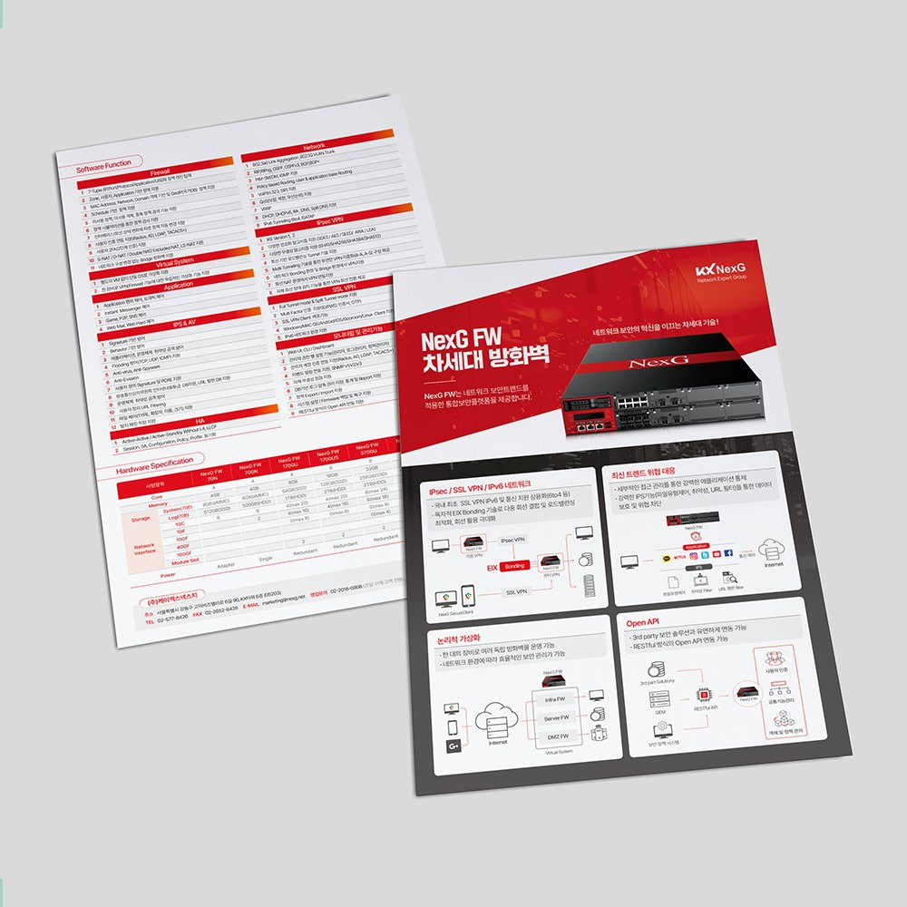
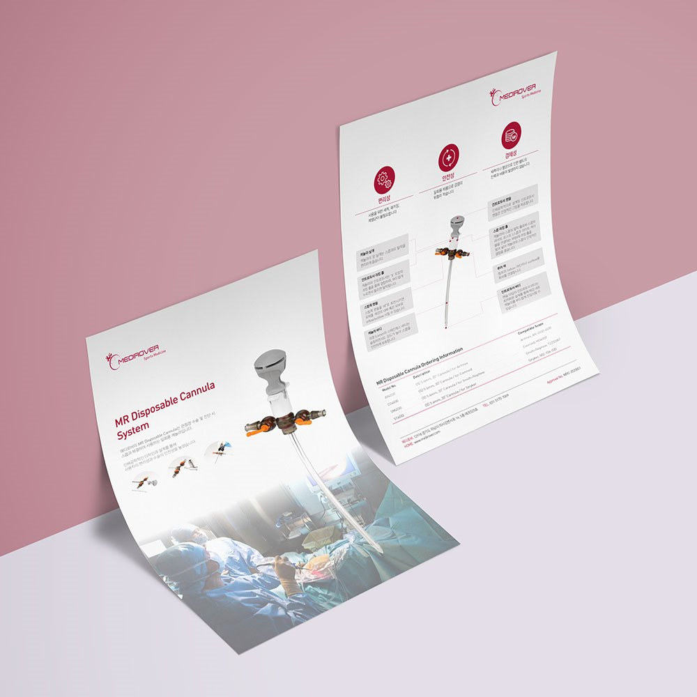
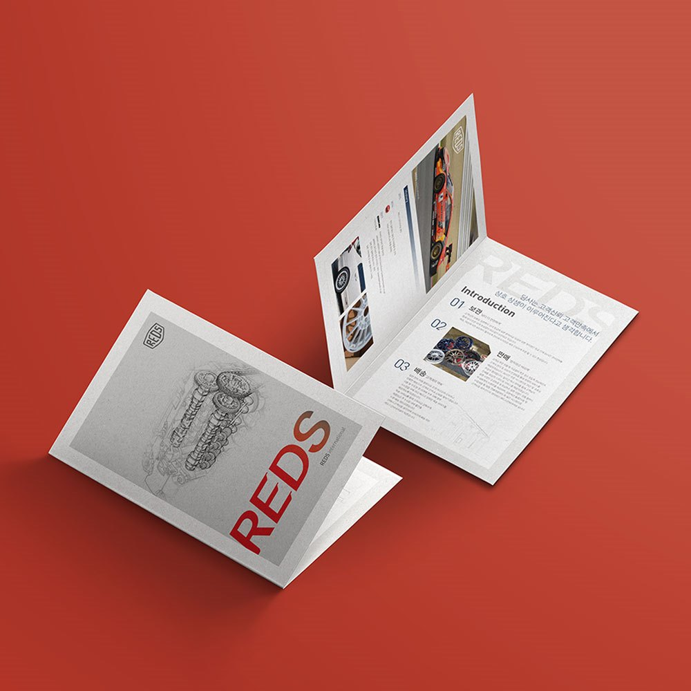
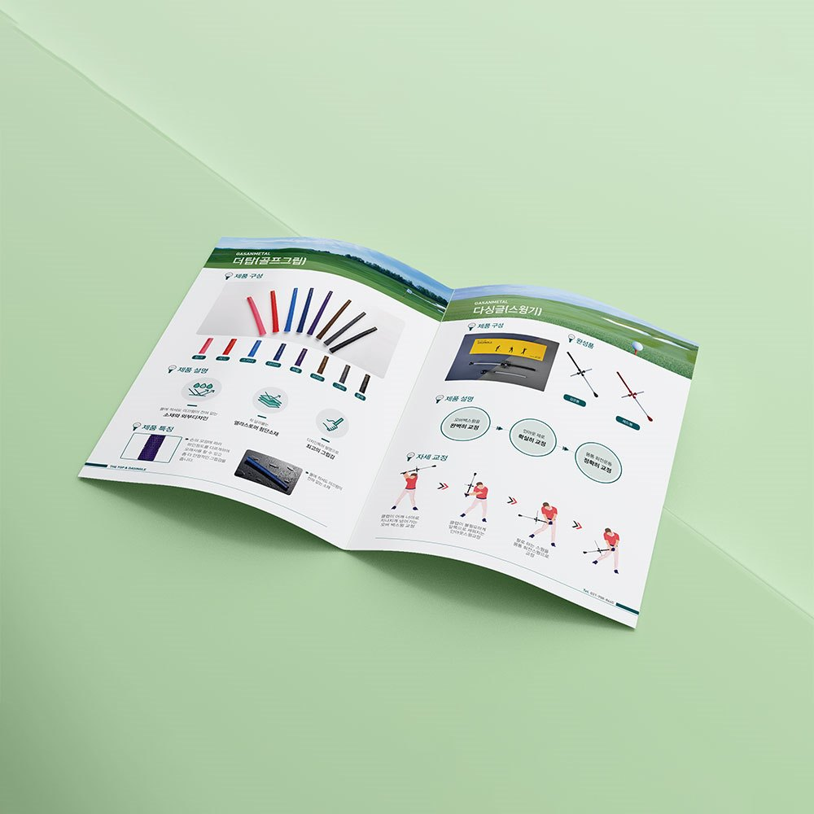
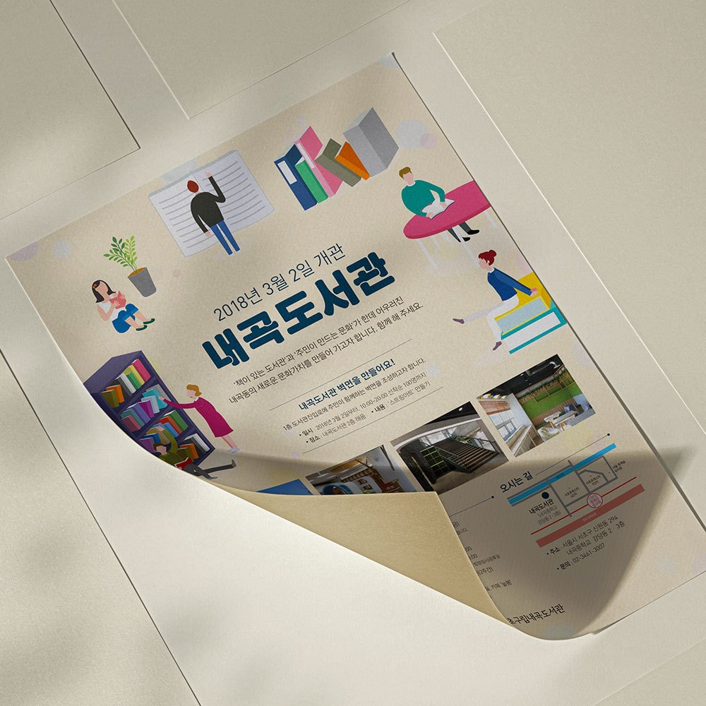
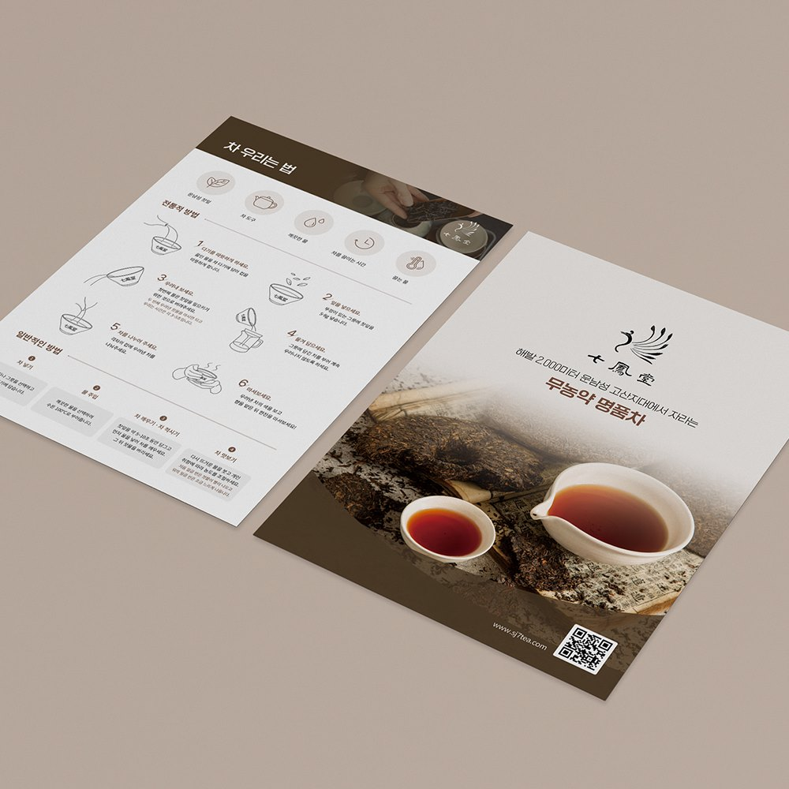
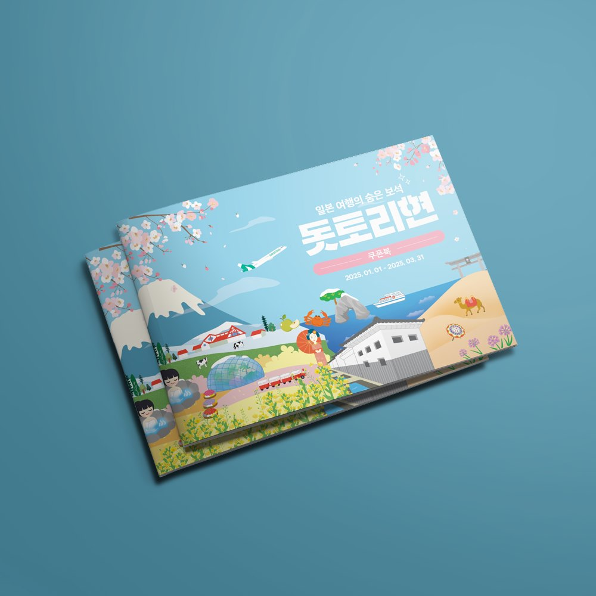

매달 · 매분기 나오는 소식지 · 회보를 맡길 때
첫 호에서 표지 · 본문 · 꼭지별 템플릿을 만들어 두고 이후 호는 원고 교체 위주로 진행해 발행 주기를 지킵니다.
대전 · 세종 · 충청권 방문 미팅평일 09:00 ~ 18:00
PAMPHLET
리플렛보다 많고 카탈로그보다 가벼운 안내 책자.
정책 안내, 기관 소식지, 행사 안내를 8~32페이지 팜플렛으로 만듭니다.

대전지사의 방식
공공기관 소식지와 협회 회보처럼 정기적으로 나오는 팜플렛은 매호 처음부터 디자인하면 비용과 시간이 늘어납니다.
팜플렛은 페이지 수와 용도에 따라 중철·무선 제본을 고릅니다.
이런 경우
첫 호에서 표지 · 본문 · 꼭지별 템플릿을 만들어 두고 이후 호는 원고 교체 위주로 진행해 발행 주기를 지킵니다.
절차와 신청 방법을 도해로 정리하고 기관 CI 규정을 반영해 대량 인쇄합니다.
48p 이상은 무선 제본, 100p 이상은 양장도 가능합니다. 발간등록번호와 ISBN 표기 위치를 함께 잡습니다.
제작 항목
필요한 항목만 골라 의뢰하셔도 좋습니다.
PAMPHLET
공공기관·지자체·병원의 정책과 서비스를 순서대로 안내하는 팜플렛을 만듭니다.
표와 절차도를 한눈에 들어오게 정리합니다.

PAMPHLET
기관 소식지, 협회 회보, 정책 백서를 정기 발행 체계로 제작합니다.
템플릿을 만들어 두고 매호 빠르게 발행합니다.

PAMPHLET
학회, 전시회, 기념식의 프로그램과 참여 기관을 소개하는 안내 책자를 만듭니다.
행사 당일에 맞춰 인쇄와 납품을 관리합니다.
Use case
리플렛보다 담을 내용이 많고, 브로슈어만큼 두껍지는 않을 때 씁니다.
순서, 연사, 안내를 면마다 나눠 담습니다.
커리큘럼과 일정표를 표로 정리하기 좋습니다.
정기 발행물의 틀을 만들어 두고 호마다 교체합니다.
브로슈어 제작 전 간이 소개용으로 씁니다.
Form
면수에 따라 접지로 갈지, 제본으로 갈지가 달라집니다.
가운데를 철심으로 박아 접는 방식입니다. 펼쳤을 때 완전히 평평해져 표나 이미지를 양면에 걸쳐 쓸 수 있습니다.
제본 없이 접기만 합니다. 단가가 낮고 제작이 빨라 대량 배포용에 적합합니다. 2단 · 3단 · 4단 중 선택합니다.
옆면을 스프링으로 묶습니다. 360도로 접히고 낱장 교체가 가능해 교육 자료나 매뉴얼에 씁니다.
Size
완성(접었을 때) 기준 대표 판형입니다. 표기 외 규격도 제작 가능합니다.
| 판형 | 완성 사이즈 | 주로 쓰는 곳 |
|---|---|---|
| A4 | 21.0 × 29.7cm | 학교 · 기관 안내, 제출용 자료 |
| B5 | 18.2 × 25.7cm | 행사 프로그램북, 교육 자료 |
| A5 | 14.8 × 21.0cm | 배포용 소책자, 전시 안내 |
| 정사각 | 21.0 × 21.0cm | 브랜드 · 제품 소개, 연출용 |
Paper
팜플렛은 표지와 내지를 다른 용지로 쓰는 경우가 많습니다.
뚜렷한 색감을
표현하는 재질
매끈하고
차분한 느낌
코팅이 없어
필기가 잘됨
부드러운 표면의
고급 재질
표지는 두껍게, 내지는 얇게 — 표지 200~250g / 내지 100~150g이 기본 조합입니다.
내지용
면수 많을 때
내지 기본
비침이 적음
표지 기본
적당한 힘
표지 고급형
빳빳한 마감
차분한 고급 마감
지문이 덜 남음
색이 진하고 선명
사진 위주에 적합
표지 로고에 광택
프리미엄 연출
모서리를 둥글게
배포용에 적합
진행 순서
발행 목적과 페이지 수,
수량과 배포 일정을 확인합니다.
꼭지 구성과 제본 방식을 정하고
견적과 일정을 안내합니다.
표지와 본문 템플릿을 먼저
확인받고 전체를 편집합니다.
원고 교정과 수정을 반영하고
인쇄 데이터를 검수합니다.
자체 인쇄소에서 인쇄·제본 후
배포처로 납품합니다.
제작 사례





자주 묻는 질문
대전에서 팜플렛과 소식지를 의뢰하실 때 가장 많이 받는 질문입니다.
16페이지 기준으로 디자인 1~2주, 인쇄·제본 1주 정도로 약 3주가 걸립니다. 정기 소식지는 템플릿이 있으면 원고 접수 후 1주 안에 발행할 수 있습니다.
중철 제본은 4의 배수, 무선 제본은 2의 배수로 맞춰야 합니다. 원고량을 보고 8·12·16·24페이지 중 가장 가까운 구성을 제안해 드립니다.
네. 첫 호에서 템플릿을 만들어 두면 이후 호는 편집 비용이 줄어듭니다. 연간 발행 계약으로 진행하면 인쇄 단가도 함께 조정해 드립니다.
네. 48페이지 이상은 무선 제본으로 진행하고, 100페이지가 넘는 보고서는 양장 제본도 가능합니다. 발간등록번호와 ISBN 표기 위치도 함께 잡아 드립니다.
네. 인쇄본과 함께 홈페이지 게시용 PDF, 카드뉴스용 이미지, 원본 파일을 전달합니다.
네. 정부대전청사·유성·둔산 등 대전 전 지역과 세종청사 기관은 필요한 날 방문해 제본 샘플을 보며 상담드립니다. 전화 1600-9487로 요청해 주세요.
FIRST DESIGN DAEJEON
기획 · 디자인 · 번역 · 촬영 · 인쇄를 한 팀이 진행합니다.
원고가 정리되기 전이라도 목차와 일정부터 함께 잡아 드립니다.